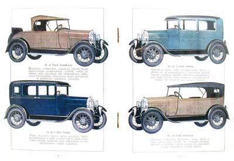

Ki hinné, hogy egy évszázaddal ezelőtt még csak alig
néhány kiváltságos ember birtokolt autót. Pedig ez így volt az egész
világon,
még az Egyesült Államokban is. Az autók drágák, az utak pedig gépjármúvek
közlekedésre alkalmatlanok voltak.
Ilyen viszonyok között építette első autóját
Henry Ford. Az első sikeres próbálkozások után 1903-ban megalakította a Ford
Motor Company-t, s az igazi átütő sikert jelentő T-modellre sem kellett sokat
várni.
A T-modell olyan autó volt, amilyet Ford megálmodott, azaz
Ahhoz, hogy elérje célját, szüksége volt